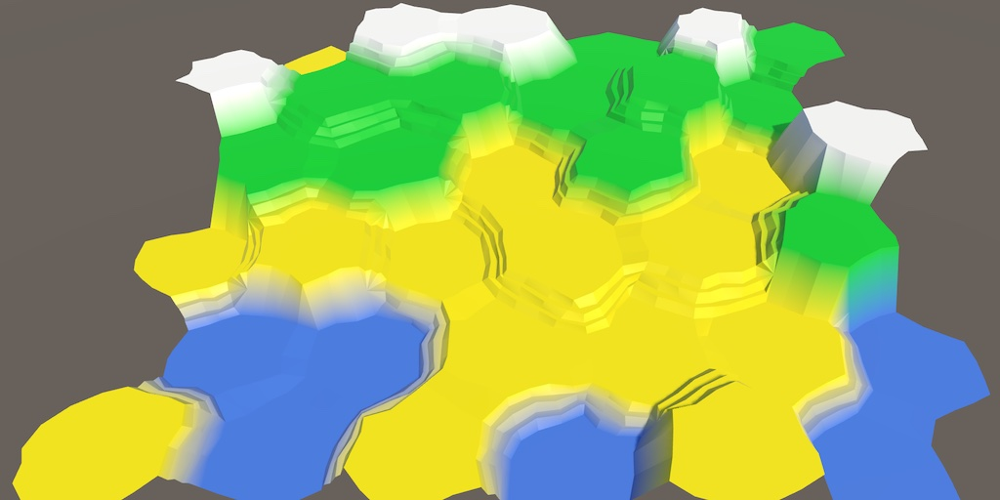

Hex Map 3.1.0
Condensing Hex Values
- Further simplify cells.
- Store seven values in a single integer.

This tutorial is made with Unity 2022.3.15f1 and follows Hex Map 3.0.0.
More Code Cleanup
In the previous tutorial we demoted HexCell from a MonoBehaviour to a regular class. We continue working on it, simplifying it more, cleaning up some code, and fixing a bug.
I won't show it in this tutorial, but I changed the C# code so all lines have a maximum width of 80 characters. This makes it easier to work with two code viewports open side by side, either when editing or when comparing code revisions. I also applied the code style used for C# to HLSL.
Saving and Loading Hex Flags
Let's begin by moving the code for saving and loading the data stored in HexFlags to its extension methods. We have to use the System.IO namespace in the HexFlags.cs file for this.
using System.IO;
Add a Save extension method that contains a copy of the code in HexCell.Save. Then remove the code unrelated to HexFlags data and make it directly access the flags.
public static void Save(this HexFlags flags, BinaryWriter writer)
{
//…
writer.Write(flags.HasAny(HexFlags.Walled));
if (flags.HasAny(HexFlags.RiverIn))
{
writer.Write((byte)(flags.RiverInDirection() + 128));
}
else
{
writer.Write((byte)0);
}
if (flags.HasAny(HexFlags.RiverOut))
{
writer.Write((byte)(flags.RiverOutDirection() + 128));
}
else
{
writer.Write((byte)0);
}
writer.Write((byte)(flags & HexFlags.Roads));
writer.Write(flags.HasAll(HexFlags.Explored | HexFlags.Explorable));
}
Now we can simplify HexCell.Save by forwarding work to the flags.
public void Save(BinaryWriter writer)
{
…
//writer.Write(Walled);
//…
//writer.Write(IsExplored);
flags.Save(writer);
}
Likewise, add a Load extension method for HexFlags, containing a copy of the HexCell.Load code modified in the same way. Make it an extension method acting on a basis value, which is used to keep the cell's explorable state. As usual for HexFlags it returns the result, in this case the loaded flags.
public static HexFlags Load(
this HexFlags basis, BinaryReader reader, int header)
{
HexFlags flags = basis & HexFlags.Explorable;
//…
if (reader.ReadBoolean())
{
flags = flags.With(HexFlags.Walled);
}
byte riverData = reader.ReadByte();
if (riverData >= 128)
{
flags = flags.WithRiverIn((HexDirection)(riverData - 128));
}
riverData = reader.ReadByte();
if (riverData >= 128)
{
flags = flags.WithRiverOut((HexDirection)(riverData - 128));
}
flags |= (HexFlags)reader.ReadByte();
//IsExplored = header >= 3 && reader.ReadBoolean();
if (header >= 3 && reader.ReadBoolean())
{
flags = flags.With(HexFlags.Explored);
}
return flags;
}
Now we can also simplify HexCell.Load.
public void Load(BinaryReader reader, int header)
{
//flags &= HexFlags.Explorable;
…
flags = flags.Load(reader, header);
RefreshPosition();
…
//if (reader.ReadBoolean())
//{
//flags = flags.With(HexFlags.Walled);
//}
//…
//IsExplored = header >= 3 && reader.ReadBoolean();
Grid.ShaderData.RefreshTerrain(this);
Grid.ShaderData.RefreshVisibility(this);
}
Hex Cell Simplification
We further simplifity HexCell by making a few changes. First, RemoveIncomingRiver, RemoveOutgoingRiver, and GetElevationDifference are only used by the cell itself so we no longer make them public.
Second, we'll exclusively use getter properties everywhere in HexCell instead of accessing fields such as terrainTypeIndex. We'll also assign the correct elevation once in Load, via an intermediate variable, instead of temporarily storing an offset value. This makes it possible to compact all these values, which we'll do shortly. I only show the code change for that final bit in Load.
flags &= HexFlags.Explorable;
TerrainTypeIndex = reader.ReadByte();
int elevation = reader.ReadByte();
if (header >= 4)
{
elevation -= 127;
}
Elevation = elevation;
RefreshPosition();
Third, remove the RefreshSelfOnly method and instead invoke Chunk.Refresh directly. The refreshing of the unit position was never needed in those cases, so we eliminate it.
Fourth, remove the private IsExplored setter. We only set it to true in IncreaseVisibility, so we instead set the flag data there directly.
public void IncreaseVisibility()
{
visibility += 1;
if (visibility == 1)
{
//IsExplored = true;
flags = flags.With(HexFlags.Explored);
Grid.ShaderData.RefreshVisibility(this);
}
}
Fifth, remove the unused debug method SetMapData from both HexCell and HexCellShaderData.
Finally, remove the GetEdgeType method with a HexDirection parameter. It is only used once in HexGridChunk.TriangulateConnection, where we can use the other version that has a HexCell parameter, passing it the neighbor.
if (cell.GetEdgeType(neighbor) == HexEdgeType.Slope)
{
TriangulateEdgeTerraces(e1, cell, e2, neighbor, hasRoad);
}
Saving After Loading Fix
There is a bug in the saving and loading code for maps, which can cause maps to be lost when saving. When saving a map to the same file that was loaded quickly enough, a sharing violation can happen which will terminate the saving process. This happens because we rely on the garbage collector to dispose of the writer and reader objects.
The fix is to adjust SaveLoadMenu such that the writers and readers are disposed as soon as we no longer need them. The easiest way to do this is to rely on the using pattern. In this case we can suffice with adding the using keyword in front of the writer variable declaration in Save and the same for reader in Load. This makes sure that the files are closed and released immediately when the methods finish.
void Save (string path)
{
using var writer = new BinaryWriter(File.Open(path, FileMode.Create));
…
}
void Load(string path)
{
…
using var reader = new BinaryReader(File.OpenRead(path));
…
}
Grouped Hex Values
Earlier we introduced a HexValues enum type that compacts multiple bit flags in a single int, significantly reducing the size of HexCell. We're going to do the same thing again, further reducing the cell size by storing seven other values in a single int.
Hex Values Struct
Create a new serializable HexValues struct that wraps a private int values variable. We will store different values into its bits. These values aren't flags but integers with a reduced range. So each stored value will take up only a few bits. Create a serializable HexValues struct with a private int values field for this purpose.
using System.IO;
[System.Serializable]
public struct HexValues
{
int values;
}
The idea is that we treat this as an immutable value type like HexFlags or a regular int, so all methods will be readonly. However, to support Unity's serialization needed for hot reloading we cannot use readonly fields. Your code editor might suggest to mark our values field as readonly anyway, so let's disable that warning.
#pragma warning disable IDE0044 // Add readonly modifier int values; #pragma warning restore IDE0044 // Add readonly modifier
To extract a value from values we add a private Get method with a bit mask and shift amount as parameters. We use those to shift the bits so the desired ones are on the right side—the least significant bits—and then mask them to return the correct ones.
readonly int Get(int mask, int shift) => (values >> shift) & mask;
To set a value we add a private With method with the value to include along with its mask and shift as parameters. We use those to clear the destination bits of values, and them insert the given value, appropriately masked and shifted leftward. This is used to return new values.
readonly HexValues With(int value, int mask, int shift) => new()
{
values = (values & ~(mask << shift)) | ((value & mask) << shift)
};
Note that if we assume that the given value is always in the correct range we could skip masking it, but let's mask it anyway to be safe.
Elevation
The first value that we'll store in HexValues is the cell elevation. We'll store it in the five rightmost bits. Five bits gives us a range of 0–31, which is plenty. The bit mask for this is 0b11111, which is 31, its maximum allowed value, and the shift is zero. Use this to create a public Elevation getter property that uses Get.
public readonly int Elevation => Get(31, 0);
But elevation could be negative. To support this let's shift the range by 15 so it changes to −15–16, which is still plenty, without changing the stored value. We do this by subtracting 15 when getting it.
public readonly int Elevation => Get(31, 0) - 15;
We cannot use a setter property because we treat HexValues as immutable. So we instead add a public WithElevation method that returns the HexValues data with a given elevation value inserted into it. In this case we have to add 15 to the elevation before storing it.
public readonly HexValues WithElevation(int value) => With(value + 15, 31, 0);
Levels
Use the same approach to include the water level, urban level, farm level, and plant level. Give the water level the same range as elevation, so 31 for its mask. Store it next to elevation, so shifted by 5. The other levels have four possible states each, so their mask is 3. Shift them so they're placed one after the other.
public readonly int WaterLevel => Get(31, 5); public readonly HexValues WithWaterLevel(int value) => With(value, 31, 5); public readonly int UrbanLevel => Get(3, 10); public readonly HexValues WithUrbanLevel(int value) => With(value, 3, 10); public readonly int FarmLevel => Get(3, 12); public readonly HexValues WithFarmLevel(int value) => With(value, 3, 12); public readonly int PlantLevel => Get(3, 14); public readonly HexValues WithPlantLevel(int value) => With(value, 3, 14);
Indices
The final two values that we store are the special index and the terrain type index. The terrain type index goes up to 255 and we'll use the same range for the special index.
public readonly int SpecialIndex => Get(255, 16); public readonly HexValues WithSpecialIndex(int index) => With(index, 255, 16); public readonly int TerrainTypeIndex => Get(255, 24); public readonly HexValues WithTerrainTypeIndex(int index) => With(index, 255, 24);
Now we have used all 32 bits. The data format looks like TTTTTTTT SSSSSSSS PPFFUUWW WWWEEEEE. However, we must take care to not treat the leftmost bit as an integer sign bit when shifting right. We can do that by performing a logical shift. In C# 11 we could use >>> for this, but Unity doesn't support that yet so we make do with an explicit unsigned shift, casting to uint.
readonly int Get(int mask, int shift) => (int)((uint)values >> shift) & mask;
Saving and Loading
Let's also add methods for saving and loading to HexValues, again keeping the same save format.
public readonly void Save(BinaryWriter writer)
{
writer.Write((byte)TerrainTypeIndex);
writer.Write((byte)(Elevation + 127));
writer.Write((byte)WaterLevel);
writer.Write((byte)UrbanLevel);
writer.Write((byte)FarmLevel);
writer.Write((byte)PlantLevel);
writer.Write((byte)SpecialIndex);
}
public static HexValues Load(BinaryReader reader, int header)
{
HexValues values = default;
values = values.WithTerrainTypeIndex(reader.ReadByte());
int elevation = reader.ReadByte();
if (header >= 4)
{
elevation -= 127;
}
values = values.WithElevation(elevation);
values = values.WithWaterLevel(reader.ReadByte());
values = values.WithUrbanLevel(reader.ReadByte());
values = values.WithFarmLevel(reader.ReadByte());
values = values.WithPlantLevel(reader.ReadByte());
return values.WithSpecialIndex(reader.ReadByte());
}
Hex Cell
To use the compacted values, replace the seven fields in HexCell with a single HexValues field.
//int terrainTypeIndex;//int elevation = int.MinValue;//int waterLevel;//int urbanLevel, farmLevel, plantLevel;//int specialIndex;HexValues values;
Then adjust all usage of the removed fields as appropriate. At this point they should only be used in their respective HexCell properties. I only show the changes needed for Elevation.
public int Elevation
{
get => values.Elevation;
set
{
if (values.Elevation == value)
{
return;
}
//elevation = value;
values = values.WithElevation(value);
…
}
}
The last step is to forward saving and loading the values to HexValues. The Save and Load methods of HexCell have now been greatly simplified.
public void Save(BinaryWriter writer)
{
values.Save(writer);
flags.Save(writer);
}
public void Load(BinaryReader reader, int header)
{
//…
values = HexValues.Load(reader, header);
flags = flags.Load(reader, header);
RefreshPosition();
//…
Grid.ShaderData.RefreshTerrain(this);
Grid.ShaderData.RefreshVisibility(this);
}
We're getting closer to tiny and simple cells, but we aren't there yet. More work still has to be done in future tutorials.
The next tutorial is Hex Map 3.2.0.